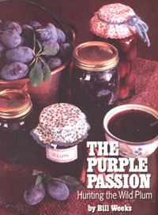
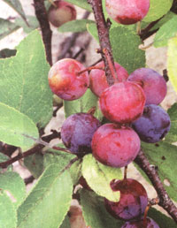

In the Northern Hemisphere, there are over 2,000 varieties of the main types of plums!
Where jams and jellies are concerned, wild plums are a peach of a fruit, the apple of any picker's eye. A fickle fruit that ripens any time between late spring and later summer, it comes in a peck of colors, a barrel of shapes, a bushel of sizes. Some are sweet, some tart. And it boasts the highest food value of any fruit, with a 20% carbohydrate content.
In the Northern Hemisphere, there are 2,000 varieties of the main types. There are about 30 varieties of native wild plums throughout the United States alone. Additional hybrids add to the complexity of variation and dilution of "purity." Some wild plums are the size of cherries, some the size of eggs. Wild native types are diverse in skin color: deep red, glowing orange, bluish crimson, bright red, bright yellow, dark yellow. Shapes may be globate, oval, conical, or heartlike. All are smooth skinned, hard-pitted drupes with yellow juicy "meat."
The first wild plums ( Prunus americana and other species) are usually ready to be plucked by June. While picking plums, one should exercise a fair amount of caution: the twigs of these scrubby trees are covered with dull, pointed thorns. The fruit itself grows singly, not in clusters as do cherries. Ripe plums will drop into one's hand at a finger's slightest provocation, and yield an elastic sensation to the squeeze of pinching fingers.
Ripened fruits which have been warmed by the sun (and untouched by the ravages of decay), can often be retrieved from the ground. Wild plums which do not separate easily from the twigs are not fully ripened, but should be included in a harvest to add a tang of taste, and more importantly-natural pectin (the substance that makes jelly jell).
Six pounds of plums should make four or five pints of crimson jelly or jam. After they are washed, the wild plums should be placed in a pan with two cups of water, covered with a lid, and put on a stove on "high" until they boil. They should then be left to simmer until the fruit becomes mushy. This mush should be stirred occa sionally while the fruit is softening up. This process shouldn't take much longer than 30 minutes.
Once "mushified," the plum residue should be left to cool for a few moments. Then pour it into a jelly bag which has been draped over a colander and inserted into another pot.
The plum mush should be left to drip through the jelly bag, until all of the juice has been collected in the second pot. This may take several hours; letting it drain overnight may be practical. The plums should not be squeezed to get the juice out, else the jelly will become clouded. Also, it would be best to either "mushify" all red, or red with yellow plums. A jam or jelly containing all yellow plums might taste too bland.
Note: Plums may be kept refrigerated for a few days if there is a necessary delay in preserving them. This may occur when there has been a limited daily harvest, as a result of a slow ripening crop.
To ensure jelling, one box of prepared pectin (1 3/4 dry ounces) should be used for every six cups of cooked plum juice. To begin converting the juice to jelly, the juice should first be brought to a boil, then the pectin added.
Next, add 7 1/2 cups of sugar, and stir the mixture to avoid scorching.
Bring the mixture to a boil again, and keep it boiling for a minute or two before removing the pan from the heat. Foam should be skimmed off the top-before the hot cooked mixture is poured into jars to jell.
Some people like to scald their jars with hot wa ter before putting their juice into them; while others prefer heating the jars in an oven at 200°F. for about 15 minutes. Sealing can be accomplished with melted paraffin or domed lids, according to package directions.
Finally, store and enjoy!
|
 |
 |
|